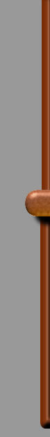
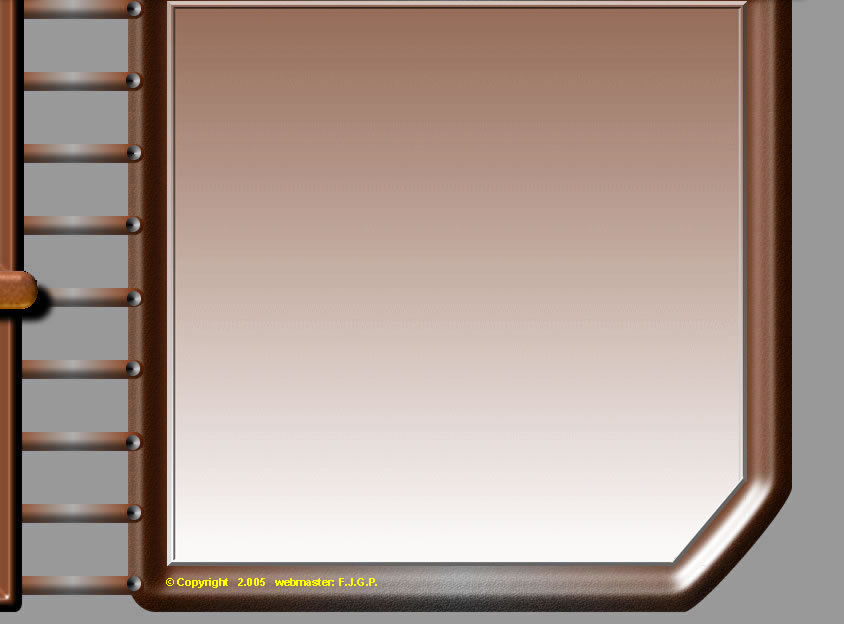
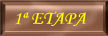
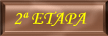
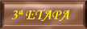
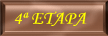
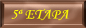
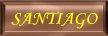

|  |  | ||
|  | |||
|  | |||
|  | |||
|  | |||
|  | |||
|  | |||
|
|||
2ª ETAPA – PORTOMARIN – PALAS DE REI km. (21 DE JUNIO/2.005)
LA NOCHE FUE MOVIDA, UNO DE GIRONA ENCIENDE LA LUZ A LA 5,30 DE LA MAÑANA, EMPIEZA EL MOVIMIENTO DE BOLSAS Y MOCHILAS, UNA ALEMANA VUELVE A ENCENDER A LAS 6, LA APAGAN LA VUELVE A ENCENDER ASI HASTA 4 VECES, LA ALEMANA NOS SALPICA DE SALIBA A TODOS, DE LO QUE EMPEZÓ A DECIR POR ESA BOQUITA, A PARTIR DE AQUÍ FUE LA “GUTENABEN” QUEDAMOS A LAS 7,15 Y PARAMOS EN EL MISMO PUEBLO A DESAYUNAR, CUANDO NOS DIMOS CUENTA, PRÁCTICAMENTE HABÍAN SALIDO CASI TODOS LOS PEREGRINOS. (A EXCEPCIÓN DE UNA PAREJITA...)
NOS TOMAMOS CON CALMA LA ETAPA, A SALIR DEL PUEBLO NOS DIRIJIMOS OTRA VEZ AL EMBALSE Y LO CRUZAMOS PERO ÉSTA VEZ POR UN PUENTE BASTANTE ESTRECHO CON FINA CHAPA EN EL SUELO QUE APARENTABA SER POCO SEGURO. NOS ENCONTRAMOS CON UNA PENDIENTE. SEGUIMOS SUBIENDO Y PRÁCTICAMENTE LA ETAPA SE DESARROLLA AL LADO DE LA CARRETERA, POSIBLEMENTE ÉSTA PUDO SER LA ETAPA MÁS FEA EN CUANTO A PAISAJE
HABIAMOS LEIDO LAS CARACTERISTICAS DE ESTA ETAPA Y NOS AVISABA DE UNA SUBIDA EN EL ALTO DE LIGONDE, LA MAÑANA ESTÁ GRIS Y AL LLEGAR A ÉSTE ALTO APARACE UN POCO DE NIEBLA, CUANDO NOS DIMOS CUENTA YA HABÍAMOS SUBIDO Y NÓ TUVIMOS NINGUNA DIFICULTAD EN ÉSTA ETAPA.
AL LLEGAR AL ALBERGUE TUVIMOS LA SUERTE DE QUE QUEDARAN 8 CAMAS LIBRES SOLAMENTE Y ADEMÁS PUDIMOS COGERLAS CONTIGUAS ES DECIR 3 LITERAS JUNTAS EN UNA HABITACIÓN Y OTRAS DOS EN OTRA.
EL ALBERGUE NO SE PARECE EN NADA AL ANTERIOR, SON UNAS HABITACIONES DE 10 LITERAS CADA UNA CON SUS TAQUILLAS CORRESPONDIENTES, VOLVEMOS A COINCIDIR CON LOS MADRILEÑOS, EMILIO Y ENRIQUE, ERIKA Y JULIAN DE CANARIAS, LAS DOS AUSTRALIANAS Y ALGUNOS MÁS QUE NÓ CONOCÍAMOS SUFICIENTEMENTE, ÉSTE ALBERGUE DISPONÍA DE LAVADORA Y SECADORA, DECIDIMOS DUCHARNOS RÁPIDAMENTE Y QUEDAR PARA COMER, PARA DESPUES PARARNOS A LAVAR LA ROPA.
EL ALMUERZO TRAS UNA ESPERA, FUÉ BASTANTE BUENO COMO VÁ SIENDO HABITUAL.
DESPUÉS UN POCO DE SIESTA.
NO PUDE CONCILIAR EL SUEÑO Y BAJÉ AL SALÓN A ESTUDIAR LA PRÓXIMA ETAPA (3ª) Y DECIDIR SOBRE LA (4ª) YA QUE DESPUÉS DE RECORRER LAS DOS PRIMERAS, HABÍAN DUDAS SOBRE QUE HACER.
ANTES DE NUESTRA AVENTURA PARA LA 4ª ETAPA TENÍAMOS DOS OPCIONES:
ARZUA–ARCA DO PINO (24 Km.) ó ARZUA-MONTE DE GOZO (35 Km. Aprox.)
DURANTE ÉSTAS DOS PRIMERAS ETAPAS, ESTUVIMOS BARAJANDO AMBAS POSIBILIDADES, MIENTRAS UNOS QUERÍAN LLEGAR HASTA MONTE DE GOZO OTROS VEÍAN LA ETAPA DEMASIADA LARGA.
PARA LA 3ª SABÍAMOS QUE ERA MUY LARGA Y ROMPEPIERNAS Y QUE SEGURAMENTE NÓ LLEGARÍAMOS A TIEMPO PARA COGER CAMA EN EL ALBERGUE (Por culpa del trasnocheo, cubatas etc.), POR LO QUE TENDRÍAMOS QUE IRNOS A UN HOSTAL (QUE A MITAD DE CAMINO PODRÍA VENIR MUY BIEN PARA DESCANSAR COMO DIOS MANDA Y RECUPERAR FUERZAS).
Y HABLANDO DE FUERZAS QUEDABA POR DECIDIR LO DE LA 4ª ETAPA, A TODO ÉSTO BAJA PACO AL SALÓN Y SE UNE AL TEMA.
LAS COSAS ESTAN PLANTEADAS ASÍ.
- LLEGAR HASTA MONTE DE GOZO
VENTAJAS: GRAN COMPLEJO, CAMPING, MUCHAS COMODIDADES
(HABLABAN MUY BIEN DE ESTO)
AFRONTAR LA ÚLTIMA ETAPA MUY CERCA DE SANTIAGO
DESVENTAJAS: ETAPA MUY LARGA (35 Km. Aprox.)
- LLEGAR HASTA ARCA DO PINO:
VENTAJAS: ETAPA MAS LIVIANA (23 Km.)
DESVENTAJAS: ALBERGUE CON MENOS PLAZAS QUE MONTE DO GOZO
AFRONTAR LA ULTIMA ETAPA UN POCO MAS LEJOS.
PENSANDO EN TODOS LOS ASPECTOS, DECIDIMOS POR LLEGAR SÓLO HASTA ARCA DO PINO, YÁ QUE COMO PODER SE PODÍA LLEGAR HASTA MONTE DO GOZO, PERO QUIZÁS SE PAGARÍA CON UN ESFUERZO MUY ALTO, SUFRIÉNDOLO ALGUNOS MÁS QUE OTROS Y NO MERECÍA LA PENA, NO SE TRATABA DE UNA COMPETICIÓN, SE TRATABA DE UN GRUPO Y DE LLEGAR JUNTOS A TODOS LOS SITIOS, DISFRUTANDO DEL CAMINO.
ASÍ LO ACORDAMOS Y POR LA TARDE DIMOS UN GARBEO POR ÉSTE PUEBLO QUE REALMENTE NO ERA DEMASIADO BONITO, HABÍA POCAS COSAS QUE VER.
ALGUNA QUE OTRA FOTO


PRÁCTICAMENTE DE LOS TRES BARES QUE HABÍA SÓLO MERECÍA LA PENA UNO (Tipo Restaurante-Bar de Copas), DONDE TRAS UNA ESTUPENDA CENA
TUVIMOS UNA NOCHE MUY ACOGEDORA, LA MAYORÍA DE LOS PEREGRINOS FUERON A DORMIR, NOSOTROS COMO SIEMPRE LOS ÚLTIMOS, NOS TOMAMOS UNOS CUANTOS CUBATOIDES, ESTÁBAMOS AGUSTÍSIMOS, EMILIO SE UNE AL GRUPO, VAMOS COGIENDO FAMA DE JUERGUISTAS, EMILIO NOS CUENTA SU VIDA, NOS EMPAPAMOS DE SUS EXPERIENCIAS SOBRE EL CAMINO, ERA LA 2ª o 3ª VEZ QUE LO HACÍA, COMENZÓ HACE BASTANTES DÍAS DESDE RONCESVALLES, SU ASPECTO DEJABA QUE DESEAR, PERO POSEÍA UNA GRAN CULTURA, HABLANDO CON NOSOTROS, DECÍA ENCONTRARSE EN PLAN “BUCÓLICO” (Más tarde nos enteramos de su significado) en términos campestres como sentirse el pastor de un rebaño de ovejas.
HABLANDO, HABLANDO CASI NO NOS DAMOS CUENTA DE QUE EL ALBERGUE IBA A CERRAR YA.
QUEDAMOS PARA EL DIA SIGUIENTE SOBRE LA 6,30 (poco a poco ibamos cogiendo la costumbre de los otros peregrinos)
Más que nada por evitar horas de sol y llegar a buena hora a los albergues.
CONTINÚA EN EL APARTADO 3ª ETAPA.
(CUALQUIER COMENTARIO SOBRE ESTA ETAPA NO DUDES EN ESCRIBIRME) PULSA SOBRE EL BUZON.